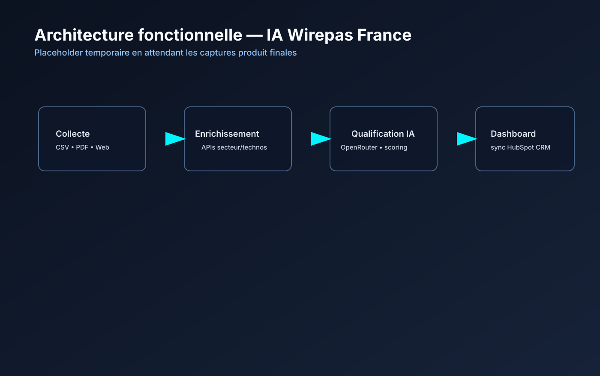

Déclaration de respect des droits d’auteurs
Par la présente, je déclare être le seul auteur de ce rapport et assure qu’aucune autre ressource que celles indiquées n’ont été utilisées pour la réalisation de ce travail. Tout emprunt (citation ou référence) littéral ou non à des documents publiés ou inédits est référencé comme tel et tout usage à un outil doté d’IA a été mentionné et sera de ma responsabilité.
Je suis informé qu’en cas de flagrant délit de fraude, les sanctions prévues dans le règlement des études en cas de fraude aux examens par application du décret 92-657 du 13 juillet 1992 peuvent s’appliquer. Elles seront décidées par la commission disciplinaire de l’UGA.
Remerciements
Je souhaite remercier M. Eden Suire, mon tuteur d’entreprise. Au-delà de sa confiance, j'ai grandement apprécié son accompagnement tout au long de cette mission. Nos échanges réguliers et ses conseils m'ont permis de prendre de vraies responsabilités sur le projet EventMiner, tout en me faisant progresser techniquement et professionnellement.
Je remercie également M. Carl Vincent, mon tuteur au sein du département Informatique de l'IUT 2 de Grenoble, pour son suivi pédagogique, son soutien et ses retours constructifs qui ont contribué à enrichir ce mémoire.
Je souhaite par ailleurs adresser mes remerciements à l'ensemble de l'équipe de Wirepas France pour l'accueil chaleureux qui m'a été réservé, la bonne ambiance de travail et la richesse des échanges que nous avons pu avoir au quotidien.
Enfin, je remercie l'IUT 2 de Grenoble et plus particulièrement le département Informatique pour la qualité de la formation dispensée au cours de cette année universitaire 2025-2026, qui m'a fourni les bases solides nécessaires à la réalisation de ce stage.
Fait à Grenoble, le 09/06/2026
Résumé
Le projet EventMiner est une application web interne développée au sein de la filiale française de Wirepas, leader mondial des solutions de connectivité mesh pour l'IoT industriel. L'objectif principal de ce travail consiste à automatiser intégralement le processus de prospection et de préparation des salons professionnels (représentant environ 12 événements annuels pour l'entreprise). Auparavant, l'identification, la qualification et la saisie des exposants pertinents exigeaient trois jours de traitement manuel par les équipes commerciales. EventMiner remplace ce flux fragmenté par un pipeline logiciel automatisé.
Le cycle de traitement de l'application s'articule autour de quatre modules majeurs : la collecte automatisée des données des exposants (via le framework de scraping Playwright ou par import de fichiers), l'enrichissement firmographique sémantique, la notation automatisée par une intelligence artificielle (basée sur l'API Claude d'Anthropic), et l'intégration directe par lots au sein du CRM HubSpot de l'entreprise. Développée sur une architecture moderne reposant sur Node.js, TypeScript, Express et Prisma (SQLite) pour la partie serveur, et React avec Tailwind CSS pour l'interface utilisateur, l'application est entièrement conteneurisée sous Docker. Le respect des exigences de qualité logicielle est assuré par une suite de 154 tests unitaires et d'intégration validés en intégration continue via GitHub Actions, atteignant une couverture de code supérieure à 80 %. Le produit minimal viable (MVP) livré remplit tous les critères de succès fixés : élimination des doublons CRM, haute précision algorithmique et réduction drastique du temps opérationnel.
Table des matières
I. Introduction
Les salons professionnels constituent un canal d'acquisition majeur pour les entreprises B2B du secteur technologique. Pour chacun d'eux, les équipes commerciales doivent toutefois passer par une phase de préparation qui consiste à identifier, qualifier et noter la liste des exposants pertinents pour leur entreprise. Ces salons comptent fréquemment plusieurs centaines, voire plusieurs milliers d'entreprises listées principalement sur des sites web. Au sein de Wirepas, ce processus administratif et chronophage privait les équipes commerciales d'un temps précieux, qui aurait pu être alloué à des tâches à plus forte valeur ajoutée.
Réalisé chez Wirepas France du 21 avril au 26 juin 2026, mon stage visait à concevoir et développer une application interne baptisée EventMiner. Ce projet a été initié à la demande directe de mon tuteur de stage, M. Eden Suire (Responsable Produit), qui a défini les besoins métiers et m'a fixé un objectif concret : rationaliser ce flux pour réduire le temps de préparation d'un salon de trois jours à moins de 2h. Pour mener à bien cette mission et concevoir une infrastructure parfaitement intégrée au système d'information de l'entreprise, j'ai collaboré étroitement avec plusieurs experts internes : M. Mika Hankakorpi (Responsable IT) pour l'accès aux environnements et modèles de langage, Mme Riikka Palola (Administratrice CRM) pour l'alignement avec les protocoles de HubSpot, ainsi que M. Ceyhun Uzunoglu pour le déploiement et la mise en production du serveur d'hébergement.
Ce mémoire présente le contexte du stage, les choix techniques retenus, la réalisation produite et les résultats obtenus à l'issue du projet.
II. Présentation du contexte professionnel
II.1. Présentation de l'entreprise
Fondée en 2010 et basée à Tampere en Finlande, Wirepas est une entreprise technologique de dimension internationale, spécialisée dans la connectivité sans fil pour l'IoT industriel. À travers une structure à taille humaine comptant une centaine de collaborateurs experts répartis en Europe, en Amérique du Nord et en Asie-Pacifique, Wirepas a su déployer sa technologie sur plus de 22 millions d'appareils à travers le monde.
Contrairement aux autres entreprises de l’IoT, Wirepas ne fabrique aucun matériel physique. Son offre repose exclusivement sur le développement de logiciels, notamment un protocole de communication réseau conçu pour s'intégrer directement dans les puces électroniques. Cette technologie fonctionne comme un réseau décentralisé et autonome, où chaque appareil connecté agit simultanément comme émetteur, récepteur et routeur. Parmi ses solutions, on retrouve le Wirepas Mesh, permettant de connecter massivement et à très bas coût des millions de capteurs à faible consommation énergétique. Plus récemment, l'entreprise a développé le standard NR+, qui constitue la toute première norme 5G mondiale non cellulaire. Cette innovation majeure permet aux industriels de déployer leurs propres réseaux privés sans dépendre d'un opérateur téléphonique ni de cartes SIM, garantissant ainsi une couverture étendue et une fiabilité de 99,9%.
Wirepas opère exclusivement en B2B via un modèle de licences logicielles. La clientèle de l'entreprise se divise en deux grandes catégories (Business Units) : Smart Tracking (suivi d'actifs logistiques) et Smart Metering & Infrastructure (gestion de réseaux urbains de compteurs communicants). L'entreprise commercialise sa solution auprès d'un vaste écosystème regroupant plus de 200 partenaires technologiques (fabricants de puces, de capteurs, et intégrateurs).
II.2. Présentation du stage
II.2.1. Sujet et objectifs
Le projet EventMiner consiste à développer une application interne d'automatisation couvrant cinq étapes clés :
- Collecte : extraction automatique d'exposants depuis les sites des salons (Playwright) ou imports de fichiers commerciaux (CSV, Excel, JSON).
- Enrichissement : récupération automatique des domaines et informations firmographiques des entreprises.
- Notation IA : attribution automatisée d'un score de pertinence commerciale via un LLM (Claude d'Anthropic).
- Intégration CRM : création automatique d'entreprises et de tâches associées dans HubSpot en évitant les doublons.
- Interface utilisateur : tableau de bord pour piloter les pipelines de traitement et analyser les prospects qualifiés.
II.2.2. Positionnement par rapport à l'existant
Avant EventMiner, le traitement reposait exclusivement sur des outils non spécialisés et manuels. L'analyse a fait apparaître trois phases particulièrement chronophages : la collecte web manuelle (huit à neuf heures par salon), l'analyse sémantique et la recherche d'adéquation (huit à neuf heures), et enfin la saisie dans le CRM (cinq à six heures). Au total, cela représentait environ vingt-quatre heures (3 jours de travail) à faible valeur ajoutée par événement.
Après études et tests de solutions existantes basées sur des API tierces traditionnelles (dont le taux de réussite plafonnait à 75%), l'intégration d'un LLM configuré en interne avec recherche web active s'est avérée financièrement et qualitativement plus robuste, offrant une qualification contextuelle ultra-calibrée sur le segment IoT industriel.
II.2.3. Acteurs clés et collaborations internes
Le développement a nécessité des collaborations transversales : Eden Suire (Product Owner) pour les besoins métiers, Mika Hankakorpi (IT Manager) pour les accès infrastructure/API LLM, Riikka Palola (CRM Manager) pour l'alignement sur les schémas d'API HubSpot, et Ceyhun Uzunoglu pour le déploiement sur les environnements de production AWS de l'entreprise.
II.2.4. Cycle de développement et méthodologie Agile
Le développement du projet s'est déroulé en cycles agiles hebdomadaires avec le responsable produit. J'ai également participé directement aux réunions bihebdomadaires de l'équipe commerciale internationale, y réalisant deux présentations en anglais (le 27 mai pour introduire l'outil, et le 9 juin pour présenter les résultats mesurables), instaurant ainsi une boucle de rétroaction avec les utilisateurs finaux pour ajuster l'ergonomie.
III. Présentation de la réalisation
III.1. Choix techniques
L'architecture de l'application s'appuie sur une démarche agile intégrant des bibliothèques robustes et éprouvées :
- Serveur applicatif : Node.js 20 & TypeScript 5 avec Express pour le serveur HTTP et Zod pour la validation déclarative des schémas de données.
- Base de données : SQLite embarqué avec l'ORM Prisma, une solution simple et performante par rapport au faible volume (quelques milliers d'entreprises par salon).
- Collecte : Playwright pour le scraping dynamique, capable d'exécuter du JS et de gérer le défilement infini ou l'authentification.
- IA & Scoring : API Anthropic Claude avec activation de la recherche web (Web Search) pour identifier le nom de domaine exact sur le web avant de réaliser la qualification, simplifiant ainsi le pipeline firmographique.
- Interface utilisateur : Single Page Application développée avec React, TypeScript et Vite, synchronisée en temps réel via Socket.IO pour suivre la progression du scraping et du scoring.
- Outils transverses : SDK HubSpot officiel (`@hubspot/api-client`), Vitest et Cypress pour les suites de tests unitaires et E2E.
III.2. Détail des tâches
Le projet s'est structuré sur 10 semaines de stage, réparties entre la phase de cadrage théorique, le développement successif des modules (scraping, scoring IA, intégration CRM HubSpot, interface utilisateur React) et enfin une phase de fiabilisation avec écriture de tests et déploiement en production sous Docker.
III.3. Description et explications du travail réalisé
III.3.1. Architecture générale
L'architecture EventMiner s'articule autour de quatre modules indépendants formant un pipeline de traitement de données unidirectionnel (Pipeline Architecture) : Acquisition → Filtrage → Notation IA → Intégration CRM. Le traitement s'effectue de manière asynchrone par lots (batch processing).

Figure 5 : Diagramme de composants et flux de pipeline d'EventMiner
Toute la configuration comportementale de l'application est centralisée dans un fichier app-config.json, qui regroupe les filtres géographiques et concurrentiels, le profil de ciblage de Wirepas, les paramètres de l'IA (choix du LLM, limite de tokens, température), facilitant ainsi la maintenance sans modification du code source.
III.3.2. Conception de la base de données
La base SQLite utilise un modèle centré sur la table Company contenant 32 colonnes alimentées progressivement. La déduplication automatique intervient en cascade lors de chaque insertion en vérifiant le nom de l'entreprise, le domaine résolu et la résolution HTTP des redirections pour intercepter les alias.
III.3.3. Acquisition des données (Scraping & Import)
La collecte Playwright implémente le concept original de "témoin" : l'utilisateur fournit le nom d'un exposant présent sur le site du salon ; le script analyse l'arbre DOM pour identifier les sélecteurs CSS similaires et extraire automatiquement toute la liste. En cas de blocage anti-scraping persistant, un module d'import de fichiers (CSV, Excel, JSON) mappe intelligemment les colonnes grâce à un algorithme local de fuzzy matching textuel, évitant la latence et le coût d'un appel IA.

Figure 7 : Diagramme de séquence du module de collecte
III.3.4. Enrichissement et notation par intelligence artificielle
Pour chaque prospect, la recherche web d'Anthropic résout le nom de domaine exact. L'application envoie ensuite un prompt structuré selon la logique Rubrics as Rewards : le LLM extrait des critères spécifiques dans un format JSON strict (Zod validation avec retries exponentiels). La note finale sur 10 est calculée localement et de façon déterministe par une fonction calculateScore() pour garantir l'auditabilité et la reproductibilité des classements (paliers HOT, WARM, COLD, Rejected).
III.3.5. Intégration HubSpot CRM
La classe CrmService gère la synchronisation de données avec HubSpot. Les requêtes unitaires ont été refactorisées en appels par lots (batch API v3), ramenant le volume de requêtes pour 100 prospects de plus de 300 à seulement 3 (recherche des domaines existants, création des fiches manquantes, association des tâches avec nomenclature standardisée). Cette refonte a divisé le temps de synchronisation par 5, tout en respectant un intervalle de 260ms pour éviter de saturer la limite de l'API HubSpot.
III.3.6. Interface utilisateur React
Développée avec React et Vite, l'UI comporte trois sections : le Pipeline (pour lancer une collecte avec jauge de progression en temps réel), l'Historique (pour consulter ou archiver d'anciens salons), et la section Données (table de recherche dynamique avec panneau de détails sur la notation IA et le statut CRM de chaque entreprise).
III.3.7. Tests et intégration continue
La suite de tests compte 154 cas automatisés (Vitest et Cypress) couvrant plus de 80% des instructions du serveur. Le pipeline GitHub Actions automatise à chaque commit la compilation, la génération du schéma Prisma et le lancement des tests. Un système de tests en conditions réelles navigue ponctuellement sur 6 sites de salons tests clés pour valider la robustesse des collecteurs face aux changements de structures web.
III.3.8. Hébergement et sécurité
L'application est conteneurisée sous Docker Compose (service backend Express + service frontend servi par Nginx jouant le rôle de reverse proxy) et déployée sur un serveur Linux dédié (AWS). Les mesures de sécurité comprennent le chiffrement HTTPS (Let's Encrypt), le middleware Helmet pour les en-têtes de protection, l'isolation des secrets via .env, et une double authentification (SSO Microsoft Entra ID principal / local bcrypt secondaire).
III.3.9. Résultats obtenus
Sur un salon de test représentatif, l'exécution complète d'EventMiner prend moins de 30 minutes contre 3 jours auparavant. Le taux de récupération des domaines est supérieur à 95% avec 0 doublon CRM. L'évaluation de l'IA sur 200 sociétés montre 96.25% d'exactitude dans les verdicts de notation (192 classifications correctes). De plus, EventMiner a détecté deux prospects très prometteurs qui avaient été totalement manqués par les équipes commerciales lors de leur processus manuel traditionnel.
IV. Conclusion
IV.1. Bilan technique
Le projet EventMiner remplit tous les objectifs du cahier des charges initial. L'architecture modulaire découpée en quatre couches indépendantes a prouvé son efficacité, permettant d'optimiser l'intégration CRM HubSpot en cours de route sans affecter le scraping ou la notation. Les évolutions futures se focaliseront sur l'extraction automatique des coordonnées des décideurs (phase 2 estimée à 5 jours/homme), la généralisation de la notation aux marchés mondiaux (3 jours/homme), et un système d'apprentissage continu basé sur les ajustements manuels des commerciaux (8 jours/homme).
IV.2. Bilan professionnel et personnel
Ce stage au sein de Wirepas France a été une expérience de transition idéale vers le monde professionnel. La collaboration directe avec l'équipe commerciale internationale m'a appris à traduire des contraintes métiers en structures logicielles concrètes et à animer des démonstrations techniques en anglais.
Sur le plan technique, prendre la responsabilité d'un projet logiciel de sa phase de cadrage à sa mise en production sécurisée sur AWS m'a permis d'acquérir une forte autonomie. La résolution de défis techniques comme la restructuration du pipeline firmographique ou l'optimisation des API par lots a renforcé ma rigueur d'ingénierie et conforté mon attrait pour le développement backend et les architectures de traitement de données.
Glossaire
Références bibliographiques et webographiques
[1] WIREPAS. Site officiel de l'entreprise : https://wirepas.com/ (consulté le 22 avril 2026).
[2] NODE.JS CONTRIBUTORS. Node.js v20.x Documentation : https://nodejs.org/docs/ (consulté le 28 avril 2026).
[3] TYPESCRIPT. TypeScript 5.x Documentation : https://www.typescriptlang.org/docs/ (consulté le 29 avril 2026).
[4] MICROSOFT PLAYWRIGHT. Automation framework docs : https://playwright.dev/ (consulté le 25 avril 2026).
[5] ANTHROPIC. Claude API Docs, Structured Outputs & Web Search capabilities : https://docs.anthropic.com/ (consulté le 10 mai 2026).
[6] HUBSPOT DEVELOPERS. CRM Companies API v3 docs : https://developers.hubspot.com/docs/api/crm/companies (consulté le 19 mai 2026).
[7] DINUM. API Recherche d'Entreprises (Données SIRENE, RNE, INSEE) : https://recherche-entreprises.api.gouv.fr/ (consulté le 02 mai 2026).